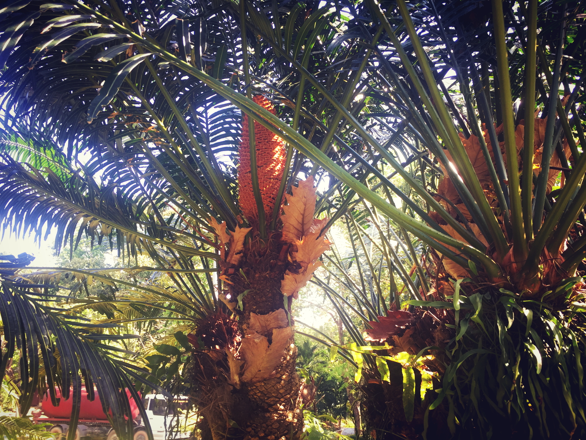

Pygmy Date Palm (ปาล์มสิบสองปันนา)
ข้อมูล
ปาล์มสิบสองปันนาเป็นไม้กลางแจ้งที่ทนต่อแสงแดดได้ตลอดวัน ต้องการน้ำและความชื้นในระดับปานกลาง แต่ก็สามารถเจริญเติบโตได้แม้มีแสงแดดน้อยและน้ำน้อย จึงสามารถนำมาปลูกเป็นไม้ประดับภายในอาคารได้
ปาล์มสิบสองปันนาเหมือนกับปาล์มชนิดอื่นๆ ที่มีคุณสมบัติในการดูดสารพิษในอากาศภายในอาคารได้ดีเยี่ยม โดยเฉพาะสารไซรีน (xylene) และมีการคายความชื้นที่ดี จึงเหมาะอย่างยิ่งที่จะนำมาปลูกเป็นไม้ประดับภายในอาคารสำนักงาน

ลักษณะ
ปาล์มสิบสองปันนามีขนาดลำต้นที่เล็ก และเติบโตช้า มีความสูงโดยเฉลี่ยประมาณ 2 เมตร ส่วนก้านใบนั้นยาว 60 - 120 เซนติเมตร ลักษณะเป็นแบบใบมะพร้าว มีใบย่อยประมาณ 100 ใบ ก้านใบจัดเรียงในระนาบเดี่ยว ส่วนใบย่อยเรียงเป็นสองข้าง ใบย่อยแต่ละใบยาว 15-25 เซนติเมตร กว้าง 1 เซนติเมตร ลักษณะโค้งลง สีเขียวอมเทา ด้านใต้ใบมีขนเล็กๆ ส่วนดอกนั้นมีขนาดเล็ก เป็นสีเหลืองอ่อน มีช่อดอกยาว 45 เซนติเมตร และมีผลนั้นเป็นผลแบบเมล็ดเดียว คล้ายอินทผลัมขนาดเล็ก เนื้อในบาง